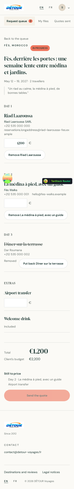
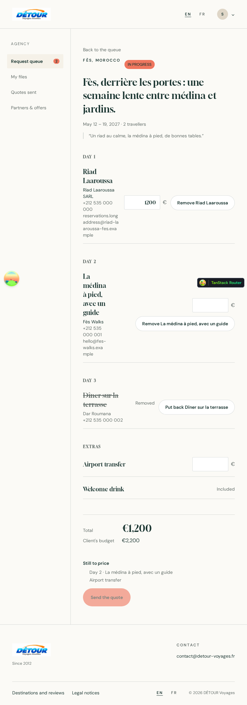
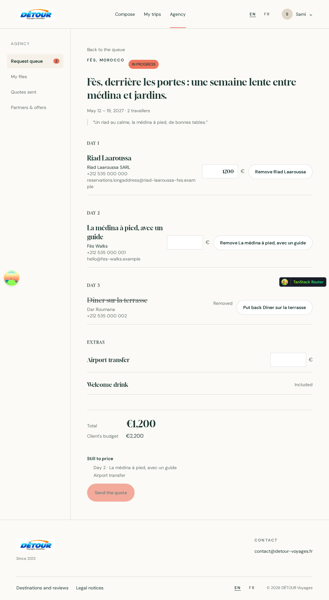
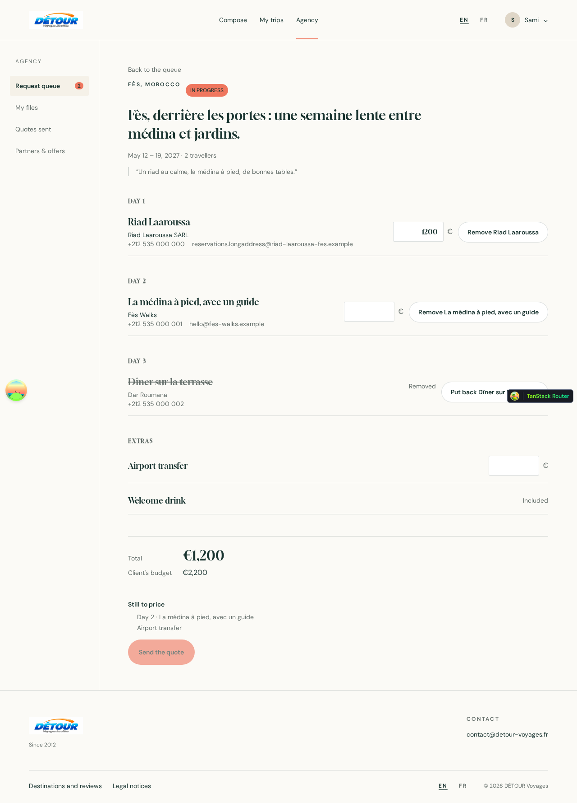
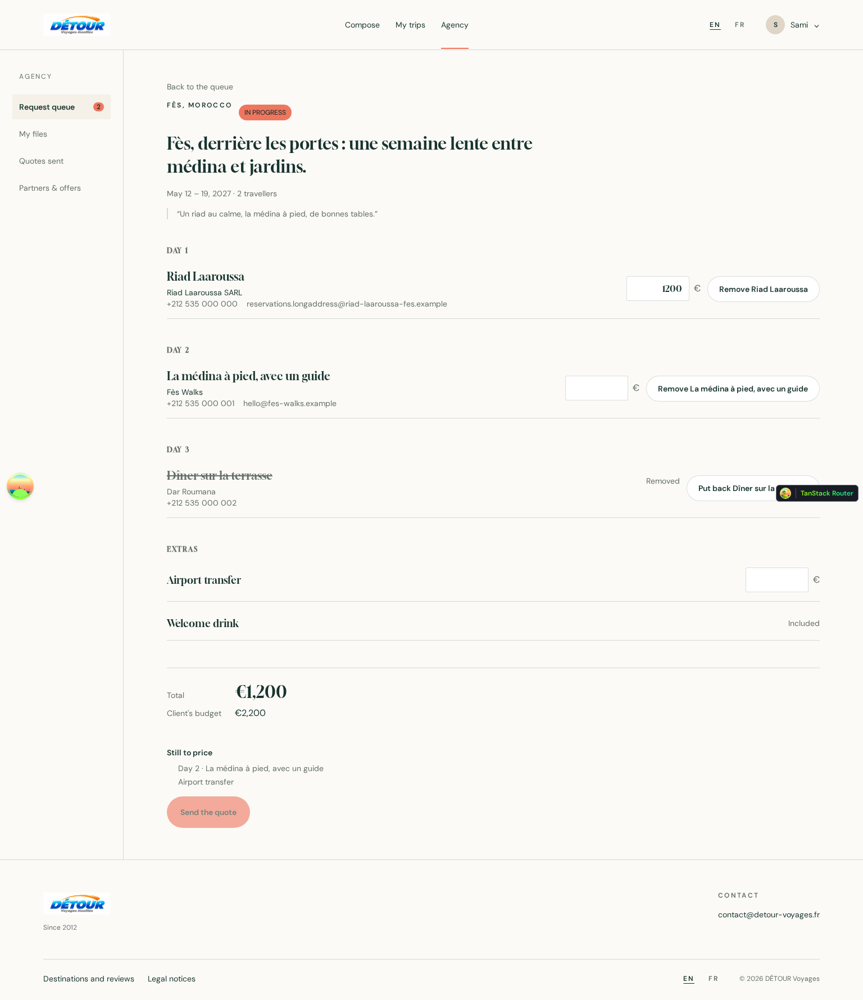
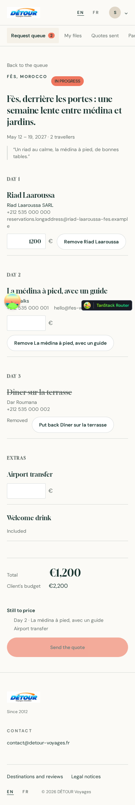

Problems
| Severity | What | Where |
|---|---|---|
| must fix | Text overlaps other text (div:nth-of-type(2) > footer.TanStackRouterDevtools > button.go1767807125.go2968029118 > div.go2821754102:nth-of-type(2)).layout.overlapping-text · section.grid.gap-2:nth-of-type(2) > div.grid.gap-3 > div:nth-of-type(1) > h3.m-0.font-serif | 360px |
| must fix | Text overlaps other text (div:nth-of-type(2) > footer.TanStackRouterDevtools > button.go1767807125.go2968029118 > div.go2821754102:nth-of-type(2)).layout.overlapping-text · div.grid.gap-3 > div:nth-of-type(1) > p.m-0.flex:nth-of-type(2) > a.break-all | 390px |
| must fix | Text overlaps other text (div:nth-of-type(2) > footer.TanStackRouterDevtools > button.go1767807125.go2968029118 > div.go2821754102:nth-of-type(2)).layout.overlapping-text · section.grid.gap-2:nth-of-type(3) > div.grid.gap-3 > div.flex.flex-wrap:nth-of-type(2) > button.inline-flex.items-center | 1280px 1536px |
| must fix | Layout shifts while loading (median CLS 0.452 of 3 loads, from 0.429 to 0.453; good is 0.1 or less); what moved: li.flex.min-h-11, footer.bg-paper.px-5, button.go1767807125.go2968029118. Reserve the space (fixed heights, aspect-ratio, a skeleton the same size as the content).layout.shift | 360px 390px 768px 1024px 1280px 1536px |
| must fix | Tap target "Back to the queue" is 320×20px; WCAG 2.2 AA needs at least 24×24 (or enough spacing).phone.tap-target · main.px-5.py-11 > article.grid.gap-12 > header.grid.gap-4 > a.text-sm.text-muted | 360px 390px 768px 1024px 1280px 1536px |
| must fix | Tap target "hello@fes-walks.example" is 166×20px; WCAG 2.2 AA needs at least 24×24 (or enough spacing).phone.tap-target · div.grid.gap-3 > div:nth-of-type(1) > p.m-0.flex:nth-of-type(2) > a.break-all | 360px 390px 1024px 1280px 1536px |
| must fix | Tap target "reservations.longaddress@riad-laaroussa-" is 357×20px; WCAG 2.2 AA needs at least 24×24 (or enough spacing).phone.tap-target · div.grid.gap-3 > div:nth-of-type(1) > p.m-0.flex:nth-of-type(2) > a.break-all | 1280px 1536px |
| should fix | Tap target "reservations.longaddress@riad-laaroussa-" is 320×40px; 44×44 is the comfortable size on phones.phone.tap-target · div.grid.gap-3 > div:nth-of-type(1) > p.m-0.flex:nth-of-type(2) > a.break-all | 360px 390px |
| should fix | Tap target "-
TanStack Router" is 147×30px; 44×44 is the comfortable size on phones.phone.tap-target · div > div:nth-of-type(2) > footer.TanStackRouterDevtools > button.go1767807125.go2968029118 | 360px 390px |
| should fix | Tap target "Open Tanstack query devtools" is 40×40px; 44×44 is the comfortable size on phones.phone.tap-target · div.tsqd-parent-container:nth-of-type(3) > div.go2420793703.tsqd-transitions-container > div.go1434192219.go1942079657 > button.tsqd-open-btn | 360px 390px |
| note | Physical left/right CSS will not mirror in RTL: .right-4 { right: calc(var(--spacing) * 4) }rtl.physical-css | 360px 390px 768px 1024px 1280px 1536px |
| note | Physical left/right CSS will not mirror in RTL: .left-2 { left: calc(var(--spacing) * 2) }rtl.physical-css | 360px 390px 768px 1024px 1280px 1536px |
| note | Physical left/right CSS will not mirror in RTL: .left-\[44px\] { left: 44px }rtl.physical-css | 360px 390px 768px 1024px 1280px 1536px |
| note | Physical left/right CSS will not mirror in RTL: .left-\[50\left: 50%\] { % }rtl.physical-css | 360px 390px 768px 1024px 1280px 1536px |
| note | Physical left/right CSS will not mirror in RTL: .float-left { float: left }rtl.physical-css | 360px 390px 768px 1024px 1280px 1536px |
| note | Physical left/right CSS will not mirror in RTL: .-mr-6 { margin-right: calc(var(--spacing) * -6) }rtl.physical-css | 360px 390px 768px 1024px 1280px 1536px |
| note | Physical left/right CSS will not mirror in RTL: .mr-1\.5 { margin-right: calc(var(--spacing) * 1.5) }rtl.physical-css | 360px 390px 768px 1024px 1280px 1536px |
| note | Physical left/right CSS will not mirror in RTL: .ml-1\.5 { margin-left: calc(var(--spacing) * 1.5) }rtl.physical-css | 360px 390px 768px 1024px 1280px 1536px |
| note | Physical left/right CSS will not mirror in RTL: .ml-2 { margin-left: calc(var(--spacing) * 2) }rtl.physical-css | 360px 390px 768px 1024px 1280px 1536px |
| note | Physical left/right CSS will not mirror in RTL: .pr-2 { padding-right: calc(var(--spacing) * 2) }rtl.physical-css | 360px 390px 768px 1024px 1280px 1536px |
| note | Physical left/right CSS will not mirror in RTL: .pl-5 { padding-left: calc(var(--spacing) * 5) }rtl.physical-css | 360px 390px 768px 1024px 1280px 1536px |
| note | Physical left/right CSS will not mirror in RTL: .text-left { text-align: left }rtl.physical-css | 360px 390px 768px 1024px 1280px 1536px |
| note | Physical left/right CSS will not mirror in RTL: .text-right { text-align: right }rtl.physical-css | 360px 390px 768px 1024px 1280px 1536px |
| note | Physical left/right CSS will not mirror in RTL: .group-data-\[orientation\=vertical\]\/tabs\:after\:-right-1:is(:where(.group\/tabs)[data-orientation="vertical"] *)::after { right: calc(var(--spacing) * -1) }rtl.physical-css | 360px 390px 768px 1024px 1280px 1536px |
| note | Physical left/right CSS will not mirror in RTL: .data-\[inset\]\:pl-8[data-inset] { padding-left: calc(var(--spacing) * 8) }rtl.physical-css | 360px 390px 768px 1024px 1280px 1536px |
| note | Physical left/right CSS will not mirror in RTL: .sm\:group-data-\[size\=default\]\/alert-dialog-content\:text-left:is(:where(.group\/alert-dialog-content)[data-size="default"] *) { text-align: left }rtl.physical-css | 360px 390px 768px 1024px 1280px 1536px |
| note | Physical left/right CSS will not mirror in RTL: .md\:left-\[4vw\] { left: 4vw }rtl.physical-css | 360px 390px 768px 1024px 1280px 1536px |
| note | Physical left/right CSS will not mirror in RTL: .md\:left-\[8\.3vw\] { left: 8.3vw }rtl.physical-css | 360px 390px 768px 1024px 1280px 1536px |
| note | Physical left/right CSS will not mirror in RTL: .md\:left-\[calc\(14vw\+24px\)\] { left: calc(24px + 14vw) }rtl.physical-css | 360px 390px 768px 1024px 1280px 1536px |
| note | Physical left/right CSS will not mirror in RTL: .md\:ml-\[17vw\] { margin-left: 17vw }rtl.physical-css | 360px 390px 768px 1024px 1280px 1536px |
| note | Physical left/right CSS will not mirror in RTL: .md\:pr-10 { padding-right: calc(var(--spacing) * 10) }rtl.physical-css | 360px 390px 768px 1024px 1280px 1536px |
| note | Physical left/right CSS will not mirror in RTL: .md\:text-right { text-align: right }rtl.physical-css | 360px 390px 768px 1024px 1280px 1536px |
| note | Physical left/right CSS will not mirror in RTL: .lg\:right-\[8vw\] { right: 8vw }rtl.physical-css | 360px 390px 768px 1024px 1280px 1536px |
| note | Physical left/right CSS will not mirror in RTL: .go1468579934 { border-right-width: 1px }rtl.physical-css | 360px 390px 1024px 1280px |
| note | Physical left/right CSS will not mirror in RTL: .go1468579934 { border-right-style: solid }rtl.physical-css | 360px 390px 1024px 1280px |
| note | Physical left/right CSS will not mirror in RTL: .go1468579934 { border-right-color: rgb(52, 64, 84) }rtl.physical-css | 360px 390px 1024px 1280px |
| note | Physical left/right CSS will not mirror in RTL: .go1434192219 { text-align: left }rtl.physical-css | 768px 1536px |
| note | Physical left/right CSS will not mirror in RTL: .go1754112896 { right: 12px }rtl.physical-css | 768px 1536px |
| note | Physical left/right CSS will not mirror in RTL: .go1942079657 { left: 12px }rtl.physical-css | 768px 1536px |
Every screen
light · LTR





light · LTR · reduced motion

What the eye measured
360-light-ltr
Above the fold, heaviest first (size, contrast, weight, colour).
- Fès, derrière les portes : une semaine lente ent text · 100
- La médina à pied, avec un guide text · 47
- Riad Laaroussa text · 31
- button.go1767807125.go2968029118 action · 30
- Remove Riad Laaroussa action · 28
- Request queue action · 22
Harmony: split / contrasting
#fbfaf6 82% --color-paper#18332f 5% --color-ink#ffffff 4% --color-white#646e6a 4% --color-mutedoklab(0.984755 -0.000433773 0.00538605 / 0.9) 2%#ef765e 2% --color-coral#f5f1e8 1% --color-ivory#191c24 0%#dfd6c7 0% --color-sand#ffc0cb 0%Colours outside the tokens: oklab(0.984755 -0.000433773 0.00538605 / 0.9) #191c24 #ffc0cb #475467 #000000
- Low contrast 2.73:1 (needs 4.5:1)
div.go2821754102 - Low contrast 1.26:1 (needs 4.5:1)
div.go1561890071
Scale ratio 1.165 · 2 families (DM Sans, Gloock) · weights 400, 500, 600, 900
30px24px20px18px16px14px12pxNone.
Columns at 8px, 20px, 181px
None.
Spacing base 4px · common gaps 12px×8, 8px×6, 48px×6, 4px×5, 16px×5, 40px×2
None.
390-light-ltr
Above the fold, heaviest first (size, contrast, weight, colour).
- Fès, derrière les portes : une semaine lente ent text · 100
- La médina à pied, avec un guide text · 47
- Riad Laaroussa text · 31
- button.go1767807125.go2968029118 action · 30
- Remove Riad Laaroussa action · 28
- Request queue action · 22
Harmony: split / contrasting
#fbfaf6 83% --color-paper#18332f 5% --color-ink#ffffff 4% --color-white#646e6a 4% --color-mutedoklab(0.984755 -0.000433773 0.00538605 / 0.9) 2%#ef765e 2% --color-coral#f5f1e8 1% --color-ivory#191c24 0%#dfd6c7 0% --color-sand#ffc0cb 0%Colours outside the tokens: oklab(0.984755 -0.000433773 0.00538605 / 0.9) #191c24 #ffc0cb #475467 #000000
- Low contrast 2.73:1 (needs 4.5:1)
div.go2821754102 - Low contrast 1.26:1 (needs 4.5:1)
div.go1561890071
Scale ratio 1.165 · 2 families (DM Sans, Gloock) · weights 400, 500, 600, 900
30px24px20px18px16px14px12pxNone.
Columns at 8px, 20px, 211px
None.
Spacing base 4px · common gaps 12px×7, 8px×6, 48px×6, 4px×5, 16px×5, 40px×2
None.
768-light-ltr
Above the fold, heaviest first (size, contrast, weight, colour).
- Fès, derrière les portes : une semaine lente ent text · 100
- La médina à pied, avec un guide text · 30
- Riad Laaroussa text · 20
- button.go1767807125.go2968029118 action · 19
- Remove Riad Laaroussa action · 18
- Request queue action · 14
Harmony: split / contrasting
#fbfaf6 88% --color-paper#18332f 4% --color-inkoklab(0.984755 -0.000433773 0.00538605 / 0.9) 3%#ffffff 2% --color-white#646e6a 2% --color-muted#ef765e 1% --color-coral#f5f1e8 0% --color-ivory#191c24 0%#dfd6c7 0% --color-sand#ffc0cb 0%Colours outside the tokens: oklab(0.984755 -0.000433773 0.00538605 / 0.9) #191c24 #ffc0cb #475467 #000000
- Low contrast 2.73:1 (needs 4.5:1)
div.go2821754102 - Low contrast 1.26:1 (needs 4.5:1)
div.go1561890071
Scale ratio 1.201 · 2 families (DM Sans, Gloock) · weights 400, 500, 600, 900
30px20px18px16px14px12pxNone.
Columns at 22px, 38px, 258px, 386px, 421px, 475px, 563px, 598px
None.
Spacing base 4px · common gaps 4px×8, 48px×7, 8px×6, 16px×5, 12px×1
None.
1024-light-ltr
Above the fold, heaviest first (size, contrast, weight, colour).
- Fès, derrière les portes : une semaine lente ent text · 100
- La médina à pied, avec un guide text · 30
- Remove La médina à pied, avec un guide action · 24
- Riad Laaroussa text · 20
- button.go1767807125.go2968029118 action · 19
- Remove Riad Laaroussa action · 18
Harmony: split / contrasting
#fbfaf6 88% --color-paperoklab(0.984755 -0.000433773 0.00538605 / 0.9) 4%#18332f 3% --color-ink#ffffff 2% --color-white#646e6a 2% --color-muted#ef765e 1% --color-coral#f5f1e8 0% --color-ivory#191c24 0%#dfd6c7 0% --color-sand#ffc0cb 0%Colours outside the tokens: oklab(0.984755 -0.000433773 0.00538605 / 0.9) #191c24 #ffc0cb #475467 #000000
- Low contrast 2.73:1 (needs 4.5:1)
div.go2821754102 - Low contrast 1.26:1 (needs 4.5:1)
div.go1561890071
Scale ratio 1.201 · 2 families (DM Sans, Gloock) · weights 400, 500, 600, 900
30px20px18px16px14px12pxNone.
Columns at 22px, 51px, 271px, 520px, 629px, 664px, 718px, 765px, 841px
None.
Spacing base 4px · common gaps 4px×8, 48px×7, 8px×6, 16px×5, 12px×1
None.
1280-light-ltr
Above the fold, heaviest first (size, contrast, weight, colour).
- Fès, derrière les portes : une semaine lente ent text · 100
- La médina à pied, avec un guide text · 30
- Remove La médina à pied, avec un guide action · 24
- Put back Dîner sur la terrasse action · 22
- Riad Laaroussa text · 20
- button.go1767807125.go2968029118 action · 19
Harmony: split / contrasting
#fbfaf6 89% --color-paperoklab(0.984755 -0.000433773 0.00538605 / 0.9) 4%#18332f 3% --color-ink#ffffff 2% --color-white#646e6a 2% --color-muted#ef765e 0% --color-coral#f5f1e8 0% --color-ivory#191c24 0%#dfd6c7 0% --color-sand#ffc0cb 0%Colours outside the tokens: oklab(0.984755 -0.000433773 0.00538605 / 0.9) #191c24 #ffc0cb #475467 #000000
- Low contrast 2.73:1 (needs 4.5:1)
div.go2821754102 - Low contrast 1.26:1 (needs 4.5:1)
div.go1561890071
Scale ratio 1.201 · 2 families (DM Sans, Gloock) · weights 400, 500, 600, 900
30px20px18px16px14px12pxNone.
Columns at 22px, 64px, 284px, 763px, 872px, 907px, 961px, 1008px, 1084px
None.
Spacing base 4px · common gaps 4px×8, 48px×7, 8px×6, 16px×5, 12px×1
None.
1536-light-ltr
Above the fold, heaviest first (size, contrast, weight, colour).
- Fès, derrière les portes : une semaine lente ent text · 100
- La médina à pied, avec un guide text · 30
- Remove La médina à pied, avec un guide action · 24
- Put back Dîner sur la terrasse action · 22
- Riad Laaroussa text · 20
- button.go1767807125.go2968029118 action · 19
Harmony: split / contrasting
#fbfaf6 90% --color-paperoklab(0.984755 -0.000433773 0.00538605 / 0.9) 4%#18332f 2% --color-ink#ffffff 1% --color-white#646e6a 1% --color-muted#ef765e 0% --color-coral#f5f1e8 0% --color-ivory#191c24 0%#dfd6c7 0% --color-sand#ffc0cb 0%Colours outside the tokens: oklab(0.984755 -0.000433773 0.00538605 / 0.9) #191c24 #ffc0cb #475467 #000000
- Low contrast 2.73:1 (needs 4.5:1)
div.go2821754102 - Low contrast 1.26:1 (needs 4.5:1)
div.go1561890071
Scale ratio 1.201 · 2 families (DM Sans, Gloock) · weights 400, 500, 600, 900
30px20px18px16px14px12pxNone.
Columns at 22px, 77px, 297px, 1006px, 1115px, 1150px, 1204px, 1251px, 1327px
None.
Spacing base 4px · common gaps 4px×8, 48px×7, 8px×6, 16px×5, 12px×1
None.